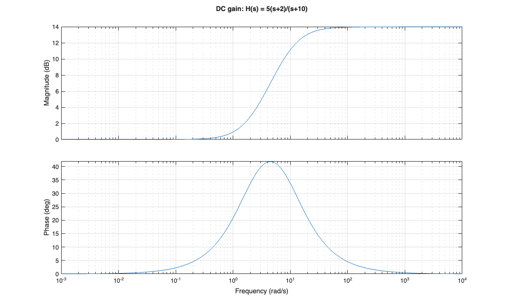
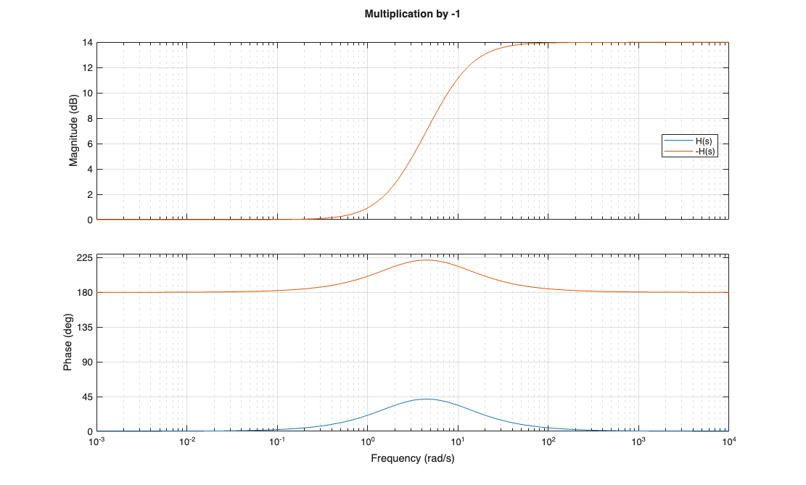
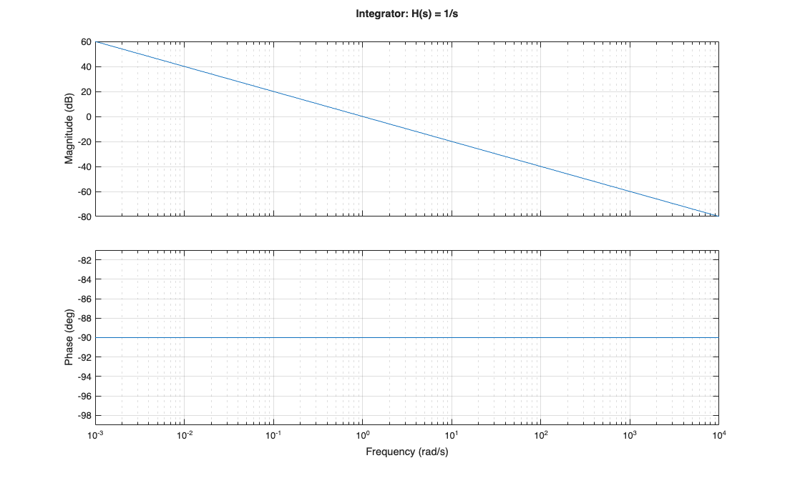
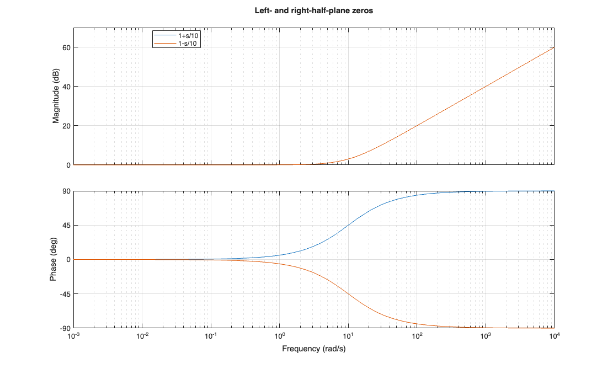
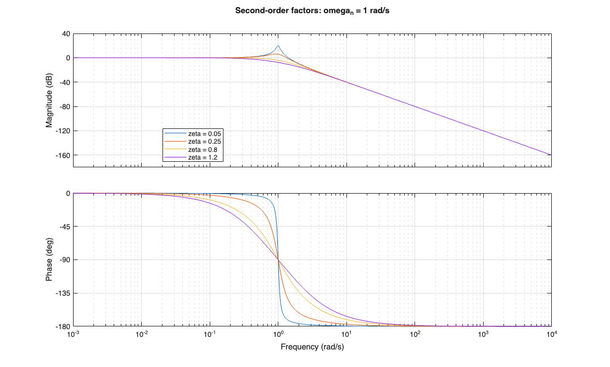
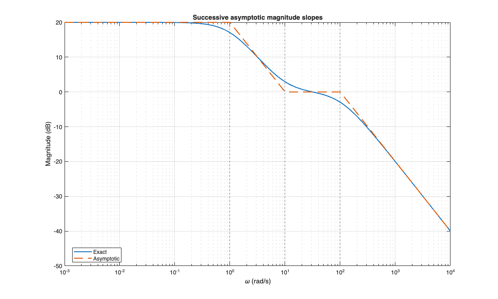

Contents
% Check the examples from the Bode Mentimeter quiz. % Requires Control System Toolbox. clear; close all; clc; s = tf('s'); w = logspace(-3,4,5000); % Frequency in rad/s
2–3. Convert amplitude gains into decibels
gain = [10; 5];
gain_dB = 20*log10(gain);
disp(table(gain,gain_dB));
% Answers: 20 dB and approximately 14 dB.
gain gain_dB
____ _______
10 20
5 13.979
4. DC gain
H = 5*(s+2)/(s+10); fprintf('DC gain = %.4f\n',dcgain(H)); % Answer: 1, corresponding to 0 dB. figure; bode(H,w); grid on; title('DC gain: H(s) = 5(s+2)/(s+10)');
DC gain = 1.0000

5. Multiplication by -1
figure; bode(H,-H,w); grid on; legend('H(s)','-H(s)','Location','best'); title('Multiplication by -1'); response = squeeze(freqresp(H,w)); negative_response = squeeze(freqresp(-H,w)); magnitude_difference = 20*log10(abs(negative_response./response)); phase_difference = angle(negative_response./response)*180/pi; fprintf('Maximum magnitude difference = %.3g dB\n', ... max(abs(magnitude_difference))); fprintf('Phase difference = %.1f degrees (modulo 360)\n', ... phase_difference(1)); % Answer: unchanged magnitude and a 180-degree phase shift.
Maximum magnitude difference = 0 dB Phase difference = 180.0 degrees (modulo 360)

6. Integrator
Hi = 1/s; mag_at_1 = abs(evalfr(Hi,1i)); mag_at_10 = abs(evalfr(Hi,10i)); slope = 20*log10(mag_at_10/mag_at_1); phase = angle(evalfr(Hi,1i))*180/pi; fprintf('Integrator slope = %.1f dB/decade\n',slope); fprintf('Integrator phase = %.1f degrees\n',phase); figure; bode(Hi,w); grid on; title('Integrator: H(s) = 1/s'); % Answer: -20 dB/decade and -90 degrees.
Integrator slope = -20.0 dB/decade Integrator phase = -90.0 degrees

7. Left- and right-half-plane zeros
H1 = 1+s/10; H2 = 1-s/10; figure; bode(H1,H2,w); grid on; legend('1+s/10','1-s/10','Location','best'); title('Left- and right-half-plane zeros'); R1 = squeeze(freqresp(H1,w)); R2 = squeeze(freqresp(H2,w)); fprintf('Maximum magnitude difference = %.3g dB\n', ... max(abs(20*log10(abs(R1./R2))))); fprintf('Phases at omega = 10 rad/s: %.1f and %.1f degrees\n', ... angle(evalfr(H1,10i))*180/pi, ... angle(evalfr(H2,10i))*180/pi); % Answer: identical magnitudes and opposite phase contributions.
Maximum magnitude difference = 2.89e-15 dB Phases at omega = 10 rad/s: 45.0 and -45.0 degrees

8–9. Second-order phase, damping and resonance
wn = 1; % Normalised natural frequency zeta = [0.05; 0.25; 0.8; 1.2]; systems = cell(numel(zeta),1); phase_at_wn = zeros(size(zeta)); underdamped = false(size(zeta)); resonant_peak = false(size(zeta)); peak_dB = zeros(size(zeta)); for k = 1:numel(zeta) systems{k} = wn^2/(s^2 + 2*zeta(k)*wn*s + wn^2); phase_at_wn(k) = angle(evalfr(systems{k},1i*wn))*180/pi; % Complex poles indicate an underdamped system. p = pole(systems{k}); underdamped(k) = any(abs(imag(p)) > 1e-10); % Include omega = 0 when checking the maximum magnitude. R = squeeze(freqresp(systems{k},[0,w])); peak_dB(k) = 20*log10(max(abs(R))); % A resonant peak exceeds the DC magnitude. resonant_peak(k) = max(abs(R)) > abs(R(1))*(1+1e-6); end disp(table(zeta,phase_at_wn,underdamped,resonant_peak,peak_dB)); figure; bode(systems{:},w); grid on; legend('zeta = 0.05','zeta = 0.25','zeta = 0.8','zeta = 1.2', ... 'Location','best'); title('Second-order factors: omega_n = 1 rad/s'); % Phase at omega_n: -90 degrees for every positive zeta. % Underdamped without a resonant peak: zeta = 0.8.
zeta phase_at_wn underdamped resonant_peak peak_dB
____ ___________ ___________ _____________ _______
0.05 -90 true true 20.009
0.25 -90 true true 6.3008
0.8 -90 true false 0
1.2 -90 false false 0

10. Successive asymptotic magnitude slopes
Hs = 10*(1+s/10)/((1+s/1)*(1+s/100)); % Corner frequencies: 1, 10 and 100 rad/s. % Slope changes: pole -20, zero +20, pole -20 dB/decade. slope_changes = [-20,20,-20]; successive_slopes = [0,cumsum(slope_changes)]; disp('Successive asymptotic slopes (dB/decade):'); disp(successive_slopes); % Answer: 0, -20, 0, -20. R = squeeze(freqresp(Hs,w)); exact_dB = 20*log10(abs(R)); % Construct the magnitude asymptotes from the individual factors. asymptote_dB = 20 ... - 20*max(0,log10(w/1)) ... + 20*max(0,log10(w/10)) ... - 20*max(0,log10(w/100)); figure; semilogx(w,exact_dB(:).','LineWidth',1.5); hold on; semilogx(w,asymptote_dB,'--','LineWidth',1.5); xline(1,':'); xline(10,':'); xline(100,':'); grid on; xlabel('\omega (rad/s)'); ylabel('Magnitude (dB)'); legend('Exact','Asymptotic','Location','best'); title('Successive asymptotic magnitude slopes');
Successive asymptotic slopes (dB/decade):
0 -20 0 -20
